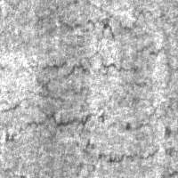
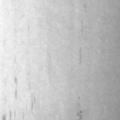
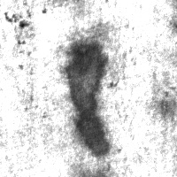
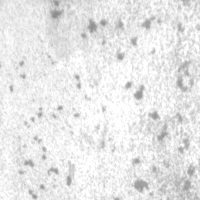
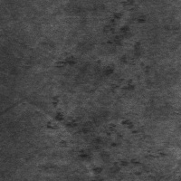
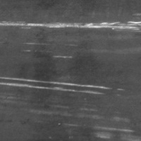

Çelik Şerit Yüzey Kusuru Sınıflandırması
Bilgisayar Görme dersi — NEU-DET veri seti ile derin öğrenme tabanlı uygulama raporu
1. Amaç ve kapsam
Endüstride sıcak haddelenmiş çelik şeritlerde yüzey kusurları kaliteyi doğrudan etkiler. Bu projede,
görüntüleri otomatik olarak altı tipik kusur sınıfından birine atayan bir
sınıflandırma (classification) sistemi kurduk. Amaç, operatör müdahalesini azaltmak ve hat üzerinde
hızlı, tekrarlanabilir karar desteği sağlamaktır.
Uygulama; veri yükleme, ön işleme ve artırma, ResNet-18 ile eğitim, doğrulama metrikleri,
eğitim grafikleri ve tek görüntü tahmini (predict.py) adımlarını içerir.
Tüm doğrulama kümesi için toplu değerlendirme evaluate.py ile yapılmıştır.
2. Veri seti (NEU-DET)
NEU-DET, gri tonlamalı çelik yüzey görüntülerinden oluşur; veri seti alt klasör yapısı ile
sınıf etiketlerini taşır. Her sınıf için 300 örnek bulunur; yaygın bölünüşe uygun olarak
240 eğitim ve 60 doğrulama görüntüsü kullanılmıştır (sınıf başı).
| Sınıf (klasör adı) | Kısaltma | Eğitim / Doğrulama |
|---|
| crazing | Cr | 240 / 60 |
| inclusion | In | 240 / 60 |
| patches | Pa | 240 / 60 |
| pitted_surface | PS | 240 / 60 |
| rolled-in_scale | RS | 240 / 60 |
| scratches | Sc | 240 / 60 |
| Toplam görüntü | 1440 eğitim + 360 doğrulama = 1800 |
|---|
Görüntüler tipik olarak 200×200 piksel civarındadır; model girişine 224×224
boyutuna yeniden ölçeklenerek verilmiştir.
3. Yöntem, yazılım ve hiperparametreler
3.1 Mimari ve öğrenme
- Ortam: Python 3, PyTorch, torchvision, scikit-learn (raporlama), Matplotlib/Seaborn (grafik).
- Model: ResNet-18, ImageNet üzerinde ön-eğitilmiş ağırlıklar; son tam bağlı katman 6 sınıfa göre yeniden tanımlandı (transfer learning + ince ayar).
- Kayıp fonksiyonu: çok sınıflı çapraz entropi (cross-entropy).
- Optimizasyon: AdamW; ağırlık çökertmesi (weight decay) ile aşırı uyuma karşı hafif düzenleme.
- Erken durdurma: doğrulama doğruluğu iyileşmezse en fazla 6 epoch beklenip eğitim sonlandırıldı (bu koşuda toplam 11 epoch).
3.2 Ön işleme ve veri artırma
- Gri görüntü, modelin beklediği 3 kanal girişe kopyalandı.
- Piksel değerleri tensöre çevrildikten sonra ortalama 0,5 / standart sapma 0,5 ile normalize edildi.
- Eğitimde: yatay çevirme ve küçük açılı rastgele döndürme ile çeşitlilik artırıldı; doğrulamada yalnızca ölçekleme ve normalizasyon kullanıldı.
| Parametre | Değer |
|---|
| Girdi boyutu | 224 × 224 |
| Toplu iş (batch) boyutu | 32 |
| Öğrenme oranı | 5×10⁻⁴ |
| Ağırlık çökertmesi | 1×10⁻⁴ |
| Azami epoch | 25 |
| Erken durdurma sabrı | 6 epoch |
4. Deneysel sonuçlar
Doğrulama kümesinde (360 örnek) elde edilen en iyi sonuçlar: doğruluk 1,00;
her sınıf için precision, recall ve F1-skoru 1,00. Bu, veri setinin verilen bölünüşünde
sınıfların görünüm olarak iyi ayrıştığını ve seçilen mimarinin yeterli kapasiteye sahip olduğunu gösterir.
Yorum: Sonuçlar çok yüksektir; bu, aynı kaynak ve çekim koşullarındaki yeni şeritler için umut verici olsa da,
farklı hat, aydınlatma veya kamera ile elde edilen görüntülerde performansın ayrıca ölçülmesi gerekir (dış doğrulama / saha testi).
| Özet metrik | Değer |
|---|
| Doğrulama doğruluğu (accuracy) | 1,000 |
| Makro F1 | 1,000 |
| Ağırlıklı F1 | 1,000 |
| Koşum adı (çıktı klasörü) | baseline_resnet18_20260501_164325 |
| Eğitilen epoch sayısı | 11 |
| Not | Erken durdurma ile sonlandı |
5. Şekiller ve kısa açıklamalar
Aşağıdaki grafikler tam sayfa genişliğine yakın gösterilmiştir; PDF’e aktarırken “Kenar boşlukları: Minimum” veya yatay mod seçerek okunabilirliği artırabilirsiniz.
6. Veri setinden örnek görüntüler (sınıf başına bir örnek)
Aşağıdaki küçük görseller NEU-DET doğrulama klasöründen alınmıştır (dosya adları: *_241.jpg).
Her biri bir kusur tipini temsil eder; model bu tür dokusal farklardan sınıf çıkarır.
Şekil 3. Altı sınıf için tipik yüzey görünümü

Crazing (Cr)
İnce çatlak ağı; yöneli çizgiler.

Inclusion (In)
Koyu lekeler; yabancı madde izi.

Patches (Pa)
Yama biçiminde bölgesel fark.

Pitted surface (PS)
Noktasal çökükler; delikli doku.

Rolled-in scale (RS)
Haddede sıkışmış ölçek deseni.

Scratches (Sc)
Belirgin çizik çizgileri.